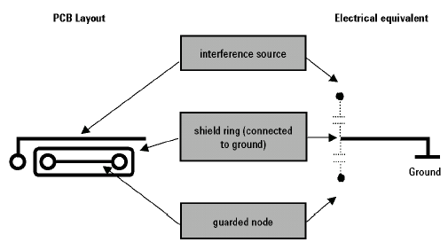
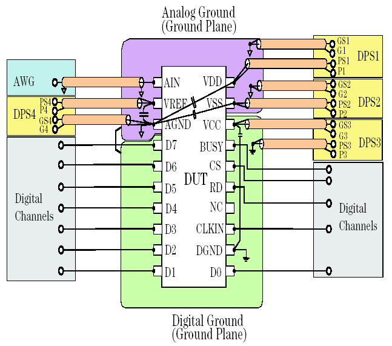

Shielding and grounding
Electrostatic shields can be used to reduce the trace-to-trace cross-talk. The grounded shield trace absorbs all signals between the traces so that the sensitive node remains undisturbed.
Coaxial cables can also be used to reduce cross-talk.
- Use coaxial cables with an impedance of 50 Ω (75 Ω for video signals).
- For analog signals, connect the cable shield to analog ground.
- For digital signals connect the cable shield to digital ground.
- For DPS or PMU force and sense lines, connect the cable shield to guard connectors.
- To avoid reflections on the transmission line, match the impedance of the transmission lines to the impedance of the instruments used for measurement.
- Low voltage ECL signals should be conducted by impedance-matched coaxial cables.Note If you connect a coaxial cable to a high impedance input, the cable manifests a capacitive load of typically 100 pF/m (depending on its dimensions). In high frequency applications, make sure that the signal source can drive the capacitive load. For higher frequency considerations see also Fencing and shielding.
If the requirements are not stringent, you can use twisted-pair cables or strip lines (implemented by a broad ground conductor running physically just underneath the signal line). The figure below shows an example of a shielding ring in a printed circuit design.

Shielding will increase the capacitive load on both the interference line and the guarded node. If this causes problems, design the guard line as a driven guard, that is, do not connect the shield ring to ground but drive the shield ring by a voltage follower at the same voltage as the guarded node. As the bandwidth of the voltage follower is limited, the capacitance can only be canceled in the range of the voltage follower's bandwidth. This limits the usage of driven guards to high-performance audio circuits and similar low frequency applications.
Proper grounding is essential for precise measurements. For mixed-signal devices, you will need separate digital and analog ground planes on the DUT board. Connect the ground planes with an inductor as shown in the figure below.
